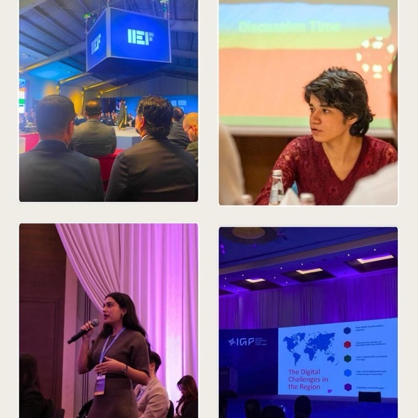
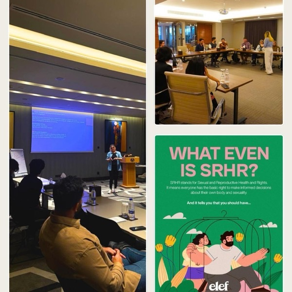
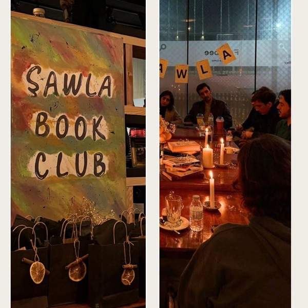
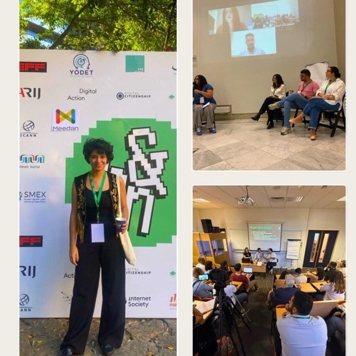

Our 2025.
ساڵی ٢٠٢٥ـمان.
Sala me ya 2025.
A year of learning, growing, and joyful moments.
ساڵێک پڕ لە فێربوون، گەشەکردن و ساتی خۆش.
Salek tijî fêrbûn, geşbûn û demên xweş.
In 2025, we showed up at forums, conferences, and workshops to learn from those who came before us, challenge our own assumptions, and understand where our work fits within larger movements.
لە ساڵی ٢٠٢٥دا بەشداریمان لە کۆڕ و کۆنفرانس و وۆرکشۆپەکاندا کرد، بۆ ئەوەی لەو کەسانە فێر ببین کە پێش ئێمە ئەم ڕێگایەیان گرتووەتەبەر، بۆچوونەکانی خۆمان بخەینە بەر پرسیار، و تێبگەین کارەکەمان لە ناو بزووتنەوە گەورەترەکاندا لە کوێ جێی دەبێتەوە.
Di sala 2025an de em beşdarî forum, konferans û atolyeyan bûn, da ku ji wan kesên ku berî me ev rê girtine fêr bibin, ramanên xwe bixin ber pirsê û fam bikin ka xebata me di nav tevgerên mezintir de li ku cih digire.
From the IEF forum to the first Internet Governance Forum and the Oxfam MENA celebration, we spoke up when youth perspectives were missing.
لە کۆڕی IEFـەوە تا یەکەمین کۆڕی حوکمڕانیی ئینتەرنێت و ئاهەنگی ئۆکسفام بۆ ڕۆژهەڵاتی ناوەڕاست و باکووری ئەفریقا، لەو شوێنانەی دەنگی گەنجان ون بوو، ئێمە قسەمان کرد.
Ji foruma IEF heta yekemîn Foruma Rêveberiya Înternetê û pîrozbahiya Oxfam MENA, li cihên ku dengê ciwanan kêm bû, em axivîn.
We're thankful to our youth community, partners, friends, and supporters who shared their stories, ideas, and energy with us. We look ahead with hope and excitement to continue this journey alongside our communities.
سوپاسی کۆمەڵگای گەنجانمان، هاوبەشەکانمان، هاوڕێکانمان و پشتیوانانمان دەکەین کە چیرۆک و بیرۆکە و وزەی خۆیان لەگەڵ ئێمە هاوبەش کرد. بە هیوا و تامەزرۆییەوە چاوەڕێی بەردەوامبوونی ئەم گەشتەین لەگەڵ کۆمەڵگاکانمان.
Em spasiya civaka xwe ya ciwanan, hevkar, heval û piştgirên xwe dikin ku çîrok, raman û enerjiya xwe bi me re parve kirin. Em bi hêvî û kelecan li benda berdewamkirina vê rêwîtiyê ne, li gel civakên xwe.



